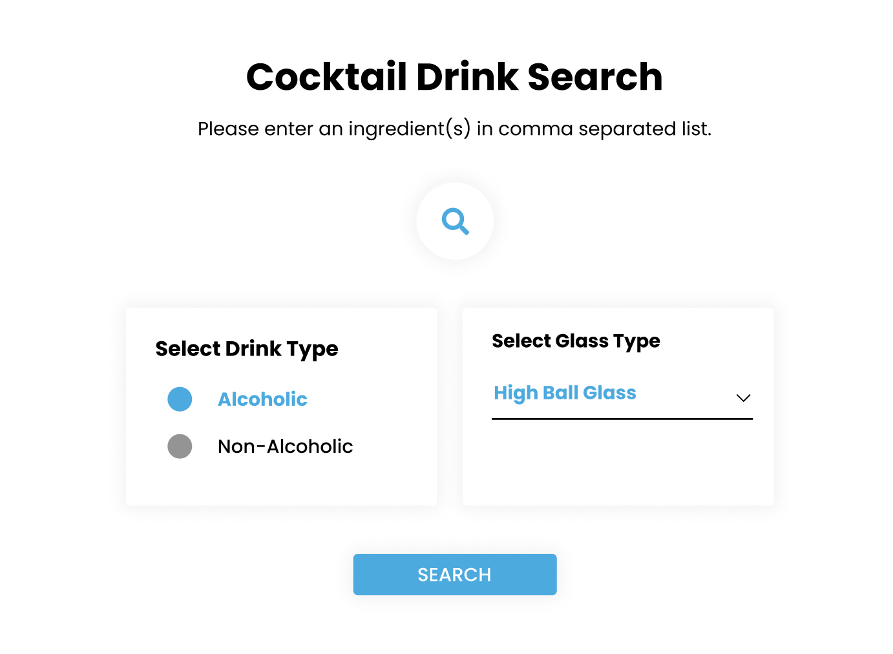
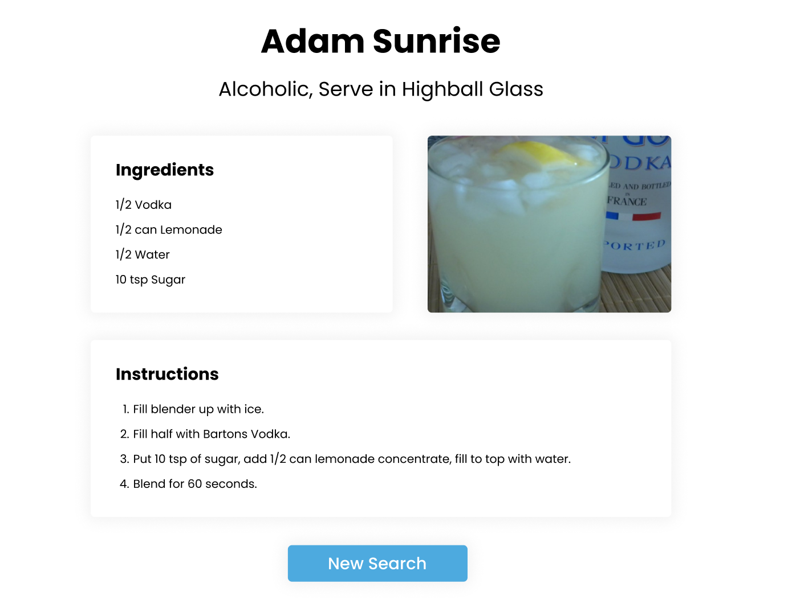

FP0: Final Project Proposal
Description
Cocktail Manager is an application that will help users find new
cocktails based on search queries like cocktail ingredients or
cocktail glass type.
UI Designs (Drawings)


Project Versions
Prototype version: My goal for this version of the
application is to have a working code that makes calls to
the API and inserts them into an HTML template. The CSS styling
will not be ready at this time and the HTML will likely be very
basic.
Final version: The final version of the application will
be able to accept user input and generate a list of suitable
results. The CSS will style the content so that it is suitable
for both mobile and desktop.
Development Steps
-
The first step will be adapting the existing
Python code into Javascript so that it is more
suitable for working with responsive HTML templates.
The basic logic and calls to the API will likely be
the same, with minor modifications to increase overall
efficiency (i.e., reduce the number of API calls).
-
The next step will be getting the code to
correctly output the results of the API calls
into HTML tags–not necessarily in the final
formatting. This will be to test that the overall
template functionality is working properly. This
will be milestone #1 (prototype).
-
Finally, I will be working on implementing the
CSS formatting with a focus on making the application
suitable for both mobile and desktop views. This
will be milestone #2 (final version).
Known Unknowns
Unknowns:
- How to translate Python to Javascript
- How to use HTML templates to generate website
layouts
Stretch Goals
I may consider adding advanced search functionality. For
example, allowing the user to input a list of ingredients
they already have and the app informing the user which
ingredients they would still need to get.
Return to Home Page